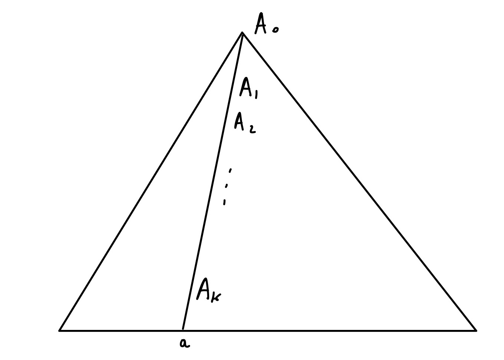
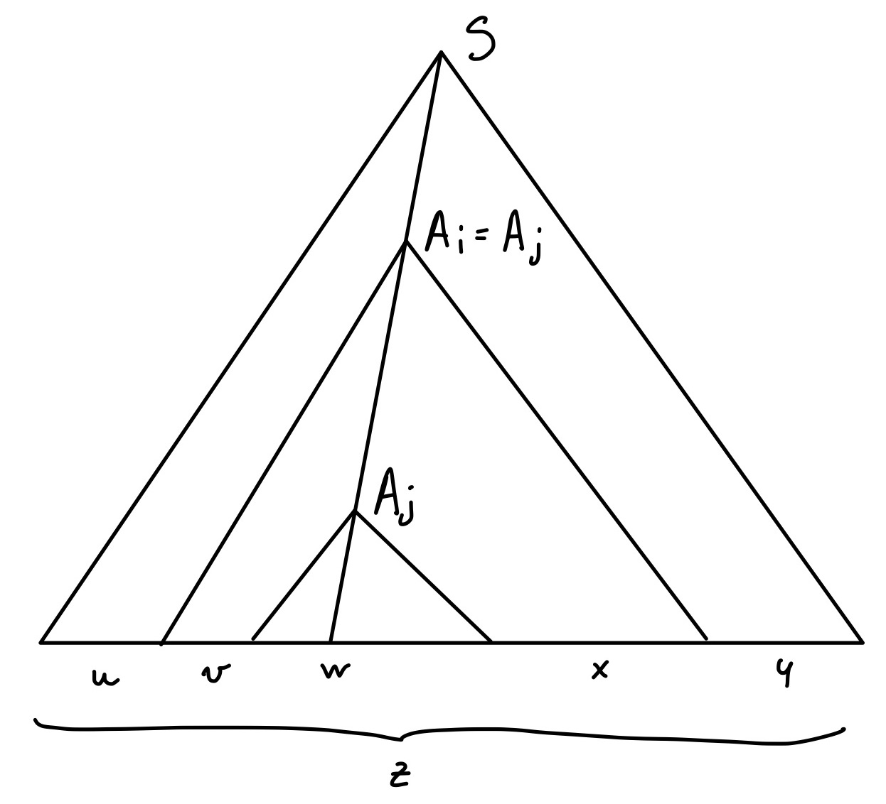
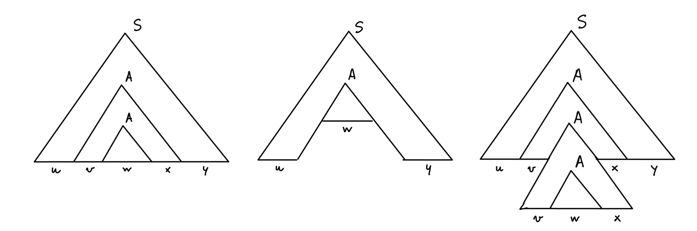

È proibito condividere e divulgare in qualsiasi forma i materiali didattici caricati sulla piattaforma e le lezioni svolte in videoconferenza: ogni azione che viola questa norma sarà denunciata agli organi di Ateneo e perseguita a termini di legge.
Per dimostrare che un linguaggio è libero, basta esibire un automa a pila (PDA) che lo riconosce, oppure una grammatica libera che lo genera. L’incapacità di trovare siffatto automa o siffatta grammatica non è una dimostrazione del fatto che il linguaggio non è libero.
In questa lezione rispondiamo alle seguenti domande:
Cerchiamo una proprietà $P$ soddisfatta da tutti i linguaggi liberi:
\[ \text{$L$ libero} ⇒ \text{$L$ soddisfa $P$} \]
Se troviamo un linguaggio $L$ che non soddisfa $P$, allora per contrapposizione possiamo concludere che $L$ non è libero:
\[ \text{$L$ non soddisfa $P$} ⇒ \text{$L$ non è libero} \]
Per ogni linguaggio libero $L$ esiste $n ∈ \bN$ tale che, per ogni $z ∈ L$ con $\len{z} ≥ n$, esistono $u$, $v$, $w$, $x$ e $y$ tali che $z = uvwxy$ e inoltre:
Dimostriamo che $L = \set{ a^kb^kc^k ∣ k ≥ 0 }$ non è libero facendo vedere che per $L$ il pumping lemma non vale.
Supponiamo, per assurdo, che esista $n$ con le proprietà enunciate nella slide.
Consideriamo la stringa $z = a^nb^nc^n$, che è in $L$ e ha la proprietà $\len{z} = 3n ≥ n$.
Devono esistere $u$, $v$, $w$, $x$ e $y$ tali che $z = uvwxy$ e che soddisfano le condizioni 1–3 della slide.
Dalla condizione 1 sappiamo che $vx ≠ \es$.
Dalla condizione 2 sappiamo che $vwx$ non può contenere sia $a$ che $c$, in quanto in $z$ la $a$ più a destra è separata dalla $c$ più a sinistra da $n$ $b$. Dunque i casi (non esclusivi, ma che coprono tutte le possibilità) sono due: o $vx$ non contiene $a$ oppure $vx$ non contiene $c$.
Dalla condizione 3 sappiamo che $uwy ∈ L$.
Ora, se $vx$ non contiene $a$, in $uwy$ il numero di $a$ è rimasto $n$, mentre il numero di $b$ e/o $c$ è diminuito. Se $vx$ non contiene $c$, in $uwy$ il numero di $c$ è rimasto $n$, mentre il numero di $a$ e/o di $b$ è diminuito. In entrambi i casi abbiamo raggiunto una contraddizione.
Argomentiamo che ogni grammatica libera $G$ può essere trasformata in una forma – detta in forma normale di Chomsky – che è “quasi equivalente” a $G$ e in cui le produzioni sono particolarmente semplici.
L’esistenza della forma normale di Chomsky di una grammatica è conseguenza di una serie di trasformazioni (non difficili, ma complessivamente tediose) della grammatica dettagliate nel libro di testo (Sezioni 7.1.1 – 7.1.4, lettura facoltativa con caffè).
Per ogni grammatica in forma normale di Chomsky, dimostriamo una relazione forte tra la profondità di un albero sintattico della grammatica e la lunghezza del suo prodotto.
Dimostriamo il pumping lemma per i linguaggi liberi.
Diciamo che una grammatica è in forma normale di Chomsky (CNF, da Chomsky Normal Form) se ogni sua produzione è della forma
È evidente che nessuna variabile (inclusa quella iniziale) è annullabile in una grammatica CNF. Infatti, ogni derivazione $A \der ⋯$ aumenta o lascia invariata la lunghezza della stringa derivata da $A$, la quale è una stringa lunga 1.
Se $G$ è una grammatica che genera almeno una stringa non vuota, allora esiste una grammatica $G’$ in forma normale di Chomsky tale che $L(G’) = L(G) - \set\es$.
Si veda la Sezione 7.1 del libro.
Sia $G$ una grammatica in forma normale di Chomsky e $w$ il prodotto di un albero sintattico di $G$ avente profondità $n ≥ 1$. Allora $\len{w} \leq {2^{n-1}}$.
Si procede per induzione sulla profondità $n$ dell’albero, ricordando che ogni foglia dell’albero deve essere etichettata con un terminale.
(Caso base $n = 1$) Allora l’albero ha una radice $A$ e un’unica foglia $a$ che coincide con $w$. Concludiamo $1 = \len{w} \leq {2^{n-1}} = 1$.
(Caso induttivo $n > 1$) Allora l’albero ha una radice $A$ con esattamente due figli etichettati $B$ e $C$ alla radice di due sottoalberi la cui profondità è non superiore a $n - 1$.
Detti $w_1$ e $w_2$ i prodotti di questi due sottoalberi, abbiamo che $w = w_1w_2$.
Usando l’ipotesi induttiva, deduciamo che $\len{w_1} ≤ {2^{n-2}}$ e $\len{w_2} ≤ {2^{n - 2}}$.
Concludiamo $\len{w} = \len{w_1} + \len{w_2} ≤ {2^{n-2} + 2^{n-2}} = {2^{n-1}}$.
Sia $L$ un linguaggio libero.
Se $L = ∅$ oppure $L = \set\es$, allora è sufficiente prendere $n = 1$ e l’enunciato del pumping lemma vale banalmente, dal momento che non ci sono stringhe di $L$ di lunghezza maggiore o uguale a 1.
Se $L$ contiene almeno una stringa diversa da $\es$, sia $G = (V, T, P, S)$ una grammatica in forma normale di Chomsky che genera $L - \set\es$.
Poniamo $n = {2^m}$ dove $m = \len{V}$.
Prendiamo $z \in L$ tale che $\len{z} ≥ n$.
Per il teorema della slide precedente, ogni albero sintattico di $G$ di profondità $m$ ha come prodotto stringhe lunghe al massimo ${2^{m-1}} = n/2$. Deduciamo che ogni albero sintattico che ha come radice $S$ e come prodotto $z$ deve avere una profondità maggiore o uguale a $m + 1$, in quando $z$ è lunga almeno il doppio di $2^{m-1}$.
Deduciamo che questo albero sintattico avrà la forma

in cui è presente un cammino lungo $k \geq m + 1$ che tocca almeno $m + 2$ nodi, dei quali almeno $m + 1$ sono nodi interni e dunque etichettati con variabili $A_i$, mentre uno (l’ultimo) è una foglia etichettata con un terminale $a$.
In particolare, le almeno $m + 1$ variabili toccate dal cammino non possono essere tutte distinte, poiché la grammatica ne ha solo $m$.
Deduciamo che almeno due delle ultime $m + 1$ variabili del cammino (da $A_{k-m}$ a $A_k$ incluse) devono essere uguali.
 Supponiamo dunque $A_i = A_j = A$ con $k - m ≤ i < j ≤ k$. Il cammino fatto da $A_0 = S$ ad $a$ può essere rappresentato come nella figura a destra, in cui il prodotto dell’albero è stato così scomposto:
Evidentemente $z = uvwxy$.

Dall’albero sintattico iniziale (riprodotto a sinistra) è ora possibile costruirne altri:
Per concludere la dimostrazione osserviamo che:
$vx ≠ \es$
Infatti, il cammino da $A_i$ ad $A_j$ deve contenere almeno una diramazione che produce almeno un simbolo in quanto la grammatica è in forma normale di Chomsky e non contiene produzioni $\es$;
$\len{vwx} ≤ n$
Infatti il sottoalbero radicato in $A_i$ ha profondità non superiore a $m + 1$ (vi è una sola variabile che si ripete nel suo cammino più lungo), dunque per il teorema in slide il suo prodotto $vwx$ ha una lunghezza non superiore a ${2^m} = n$.
Dimostrare che i seguenti linguaggi non sono liberi: